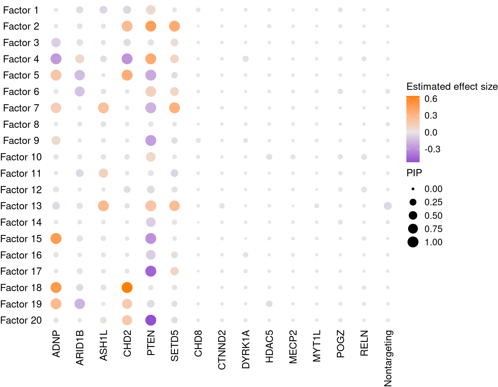
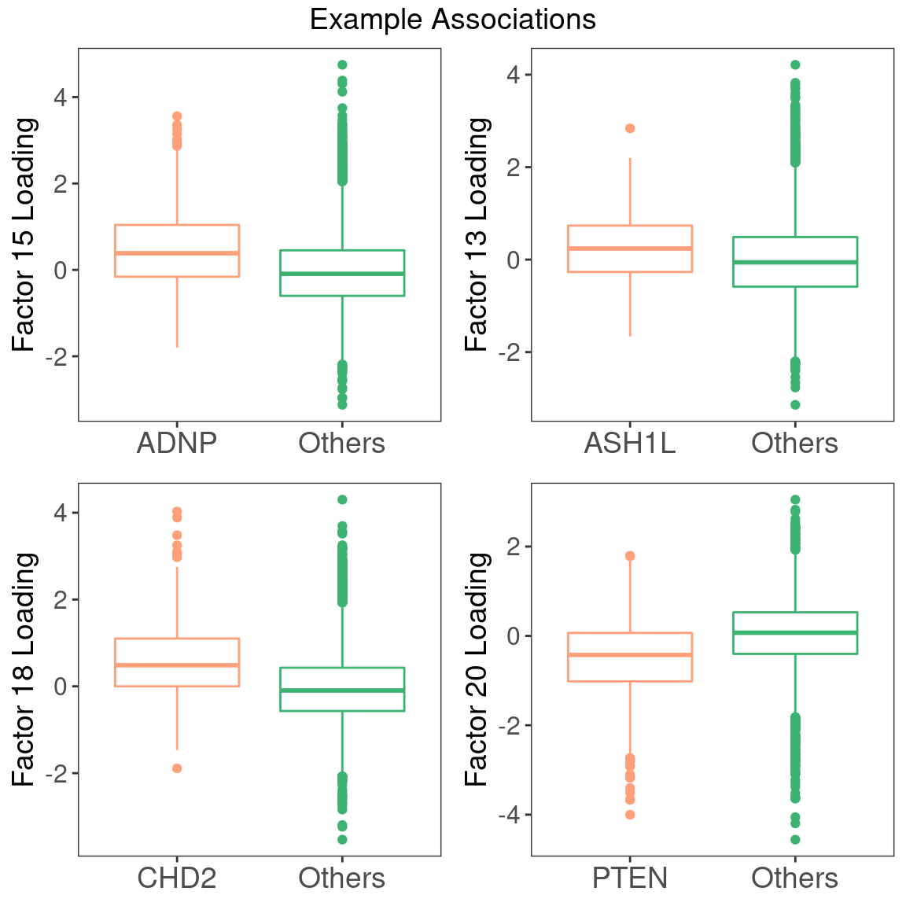

Functional Analysis on LUHMES CROP-seq GSFA Results
– NTC included, unique UMI count corrected
Yifan Zhou (zhouyf@uchicago.edu)
2021-03-03
1 GSFA on LUHMES CROP-seq Data
1.1 Data Processing
Cells:
LUHMES cells from 3 batches were merged together into 1 analysis. All cells have only a single type of gRNA readout. Quality control resulted in 8708 cells.
Genes:
Only genes detected in > 10% of cells were kept, resulted in 6213 genes.
Normalization:
Seurat “LogNormalize”: log(count per 10K + 1).
Batch effect, unique UMI count, library size, and mitochondria percentage were all corrected for. The corrected and scaled expression data were used as input for subsequent factor analysis.
1.2 GSFA Results (SVD Initialization)
Here, our “guide”, \(G\) matrix, consists of 15 types (14 genes + NTC) of gene-level knock-down conditions across cells.
Gibbs sampling was initiated from SVD, and conducted for 2000 iterations; the posterior mean estimates were averaged over the last 500 iterations.
1.2.1 Factor ~ KO Beta PIP

1.2.2 DEGs (LFSR < 0.05) under Each Perturbation
| KO | ADNP | ARID1B | ASH1L | CHD2 | CHD8 |
| Num_genes | 2092 | 434 | 789 | 1938 | 0 |
| KO | CTNND2 | DYRK1A | HDAC5 | MECP2 | MYT1L |
| Num_genes | 0 | 0 | 0 | 0 | 0 |
| KO | Nontargeting | POGZ | PTEN | RELN | SETD5 |
| Num_genes | 0 | 0 | 2099 | 0 | 987 |
Overlap of DEGs between perturbations:

Venn diagram for DEGs found under perturbations ADNP, ARID1B, ASH1L, CHD2:

2 Gene Set Enrichment Analysis
2.1 Enrichment by factor
Target genes: Genes w/ non-zero loadings in each factor (PIP cutoff at 0.95);
Backgroud genes: all 6213 genes included in factor analysis;
Statistical test: hypergeometric test (over-representation test);
Only GO terms/pathways within the size of 10 ~ 500 and have a test FDR \(<\) 0.05 are shown in the webpages.
2.1.1 Reactome Pathway Over-Representation Analysis
Gene sets: The Reactome pathway database.
Factors of interest
- Factor 8: p53-Independent DNA Damage Response, G2/M Transition
- Factor 9: Neuronal System, Transmission across Chemical Synapses
- Factor 12: Gap junction trafficking
- Factor 13: Neurotransmitter receptors and postsynaptic signal transmission, Ion channel transport, Neuronal System
- Factor 15: Transmission across Chemical Synapses, Ca2+ pathway, Gap junction trafficking
- Factor 17: Axon guidance
- Factor 19: Activation of NMDA receptors and postsynaptic events, Mitotic phases, Cell Cycle Checkpoints
- Factor 20: Neurotransmitter receptors and postsynaptic signal transmission, Ion channel transport
2.1.2 GO Slim Over-Representation Analysis
Gene sets: Gene ontology “Biological Process” (non-redundant).
Factors of interest
- Factor 10: nerve development, cell fate commitment;
- Factor 11: chromatin remodeling, DNA recombination;
- Factor 13: regulation of metal ion transport, axon development, …;
- Factor 15: neuron migration, response to metal ion, CNS neuron development, …;
- Factor 18: CNS neuron differentiation, xxx tissue development, …;
- Factor 19: axon development;
- Factor 20: nerve development, neurotransmitter transport, ….
2.2 Enrichment by perturbation
Target genes: Genes w/ LSFR < 0.05 under each perturbation;
Backgroud genes: all 6213 genes included in factor analysis;
Statistical test: hypergeometric test (over-representation test);
Only GO terms/pathways within the size of 10 ~ 500 and have a test FDR \(<\) 0.05 are shown in the webpages.
2.2.1 Reactome Pathway Over-Representation Analysis
- ADNP
- Up-regulated
- Down-regulated
- ARID1B
- Up-regulated
- Down-regulated
- ASH1L
- Up-regulated
- Down-regulated: mRNA Splicing, Transcriptional Regulation by TP53
- CHD2
- Up-regulated
- Down-regulated: Axon guidance
- PTEN
- Up-regulated
- Down-regulated: Axon guidance
- SETD5
- Up-regulated
- Down-regulated: Axon guidance
2.2.2 GO Slim Over-Representation Analysis
- ADNP
- Up-regulated:regulation of metal ion transport, regulation of neurotransmitter levels
- Down-regulated
- ARID1B
- Up-regulated
- Down-regulated: regulation of metal ion transport
- ASH1L
- Up-regulated: regulation of metal ion transport
- Down-regulated
- CHD2
- Up-regulated
- Down-regulated: central nervous system neuron differentiation
- PTEN
- Up-regulated: regulation of ion transmembrane transport, regulation of neuron projection development
- Down-regulated: regulation of metal ion transport
- SETD5
- Up-regulated: axon development, positive regulation of neurogenesis
- Down-regulated
3 Inspection of Signature Genes
3.1 Genes targeted by CRISPR knock-down
| Name | beta_W | lfsr | pass_lfsr |
|---|---|---|---|
| ADNP | -0.015 | 0.066 | FALSE |
| Name | beta_W | lfsr | pass_lfsr |
|---|---|---|---|
| ARID1B | 0.003 | 0.46 | FALSE |
| Name | beta_W | lfsr | pass_lfsr |
|---|---|---|---|
| ASH1L | -0.006 | 0.204 | FALSE |
| Name | beta_W | lfsr | pass_lfsr |
|---|---|---|---|
| CHD2 | -0.015 | 0.044 | TRUE |
| Name | beta_W | lfsr | pass_lfsr |
|---|---|---|---|
| SETD5 | 0.006 | 0.438 | FALSE |
3.2 Neuron projection genes (GO:0010975)
According to Figure 4E of the reference paper, among these marker genes, mature neuron marker genes are down-regulated and negative regulator genes are up-regulated in ADNP, CHD2 and ASH1L knock-downs; while the opposite happens in PTEN knock-down.
Here we show all the marker genes that passed LFSR < 0.05 under each knock-down. In general, their effect sizes are consistent with the findings of the paper.
| Name | beta_W | lfsr | type |
|---|---|---|---|
| HSPA5 | 0.052 | 0.000 | mature neuron |
| MAP1B | 0.100 | 0.000 | mature neuron |
| CRABP2 | -0.084 | 0.000 | mature neuron |
| CCDC88A | -0.028 | 0.000 | mature neuron |
| UBE2V2 | -0.016 | 0.036 | mature neuron |
| NEFL | -0.126 | 0.000 | mature neuron |
| ZEB2 | -0.072 | 0.000 | mature neuron |
| ITM2C | 0.191 | 0.000 | negative regulator |
| CNTN2 | 0.130 | 0.000 | negative regulator |
| ACAP3 | 0.032 | 0.002 | negative regulator |
| SERPINF1 | 0.071 | 0.000 | negative regulator |
| Name | beta_W | lfsr | type |
|---|---|---|---|
| MEF2C | 0.034 | 0.022 | mature neuron |
| ITM2C | -0.043 | 0.014 | negative regulator |
| Name | beta_W | lfsr | type |
|---|---|---|---|
| ZEB2 | -0.025 | 0.018 | mature neuron |
| ITM2C | 0.030 | 0.044 | negative regulator |
| Name | beta_W | lfsr | type |
|---|---|---|---|
| HSPA5 | 0.058 | 0.000 | mature neuron |
| CRABP2 | -0.063 | 0.012 | mature neuron |
| CCDC88A | -0.034 | 0.000 | mature neuron |
| MAPT | -0.026 | 0.036 | mature neuron |
| NEFL | -0.213 | 0.000 | mature neuron |
| MEF2C | -0.033 | 0.046 | mature neuron |
| ZEB2 | -0.041 | 0.002 | mature neuron |
| ITM2C | 0.122 | 0.000 | negative regulator |
| CNTN2 | 0.034 | 0.034 | negative regulator |
| ACAP3 | 0.042 | 0.004 | negative regulator |
| GSK3B | -0.018 | 0.004 | negative regulator |
| SERPINF1 | 0.112 | 0.000 | negative regulator |
| Name | beta_W | lfsr | type |
|---|---|---|---|
| DPYSL3 | 0.093 | 0.000 | mature neuron |
| HSPA5 | -0.053 | 0.000 | mature neuron |
| CRMP1 | 0.068 | 0.000 | mature neuron |
| CRABP2 | 0.225 | 0.000 | mature neuron |
| CCDC88A | 0.029 | 0.004 | mature neuron |
| UBE2V2 | 0.031 | 0.000 | mature neuron |
| MAPT | 0.090 | 0.000 | mature neuron |
| NEFL | 0.170 | 0.000 | mature neuron |
| ITM2C | -0.160 | 0.000 | negative regulator |
| CNTN2 | -0.069 | 0.000 | negative regulator |
| ACAP3 | -0.026 | 0.010 | negative regulator |
| GSK3B | 0.018 | 0.014 | negative regulator |
| SERPINF1 | -0.083 | 0.000 | negative regulator |
| Name | beta_W | lfsr | type |
|---|---|---|---|
| DPYSL3 | 0.039 | 0.020 | mature neuron |
| MAP1B | 0.109 | 0.002 | mature neuron |
| CRMP1 | 0.034 | 0.016 | mature neuron |
| MAPT | 0.036 | 0.010 | mature neuron |